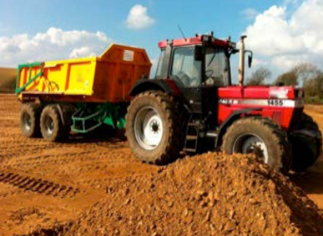
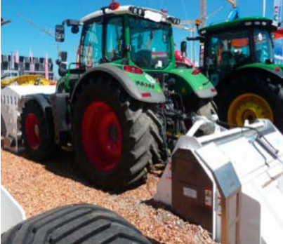

Anforderungen bei der Bereitstellung von Arbeitsmitteln/Maschinen durch den Unternehmer:
Ist es nicht möglich, demgemäß Sicherheit und Gesundheitsschutz der Beschäftigten in vollem Umfang zu gewährleisten, hat der Arbeitgeber geeignete Maßnahmen zu treffen, um eine Gefährdung so gering wie möglich zu halten.
Für den Erdbau sind speziell für dieses Einsatzgebiet konzipierte Maschinen auf dem Markt. Diese Maschinen müssen die sicherheitstechnischen Anforderungen der europäischen Maschinenrichtlinie 2006/42/EG erfüllen und werden in der Regel nach harmonisierten europäischen Normen gebaut. Für Erdbaumaschinen ist dies die EN 474. Die Überrollkonstruktion ROPS ist nach dieser Norm ausreichend sicher, wenn die ROPS-Konstruktion nach EN ISO 3471:2008 geprüft wurde. Unfälle mit kollabierten ROPS an Erdbaumaschinen sind seit vielen Jahren nicht mehr bekannt.
Für den Einsatzbereich Landwirtschaft werden Überrollschutzaufbauten von Traktoren nach OECD Test Code 4 oder der technisch gleichwertigen EG-Richtlinie 2009/75/EG geprüft. Ein wichtiger Unterschied zu der Prüfung von Erdbaumaschinen ist, dass bei Erdbaumaschinen das maximale Betriebsgewicht (bei knickgelenkten Dumpern des Zugteils) in die Bemessung eingeht. Bei Traktoren jedoch nur das Eigengewicht ohne Ballastierung und Anbaugeräte.
Das heißt, ein Traktor ohne Ballastierung mit einer angehängten knickgelenkten Mulde weist eine vergleichbare Sicherheit wie ein knickgelenkter Dumper auf.
Wird der Traktor jedoch ballastiert oder werden Anbaugeräte wie z. B. Bodenstabilisierer starr mit dem Traktor verbunden, so erhöht sich das Gewicht des Traktors. Diesen Einsatzfall bildet die Norm für die Prüfung von land- oder forstwirtschaftlichen Zugmaschinen nicht vollständig ab.
Unfälle mit landwirtschaftlichen Traktoren, bei denen nach einem Umsturz/Überschlag die ROPS-Struktur kollabiert ist, bestätigen diesen Sachverhalt.
Der Unternehmer ist nach der geltenden Rechtslage gehalten, für den Erdbau geeignete Arbeitsmittel, also Erdbaumaschinen einzusetzen. Tut er dies nicht, so ist er verpflichtet, die gleiche Sicherheit auf andere Weise zu gewährleisten. Wird also z. B. bei einem Traktor mit Ballastierung und getragenem Anbaugerät festgestellt, dass der ROPS für diese Belastung nicht ausgelegt ist, so muss der Arbeitgeber gem. § 4 der Betriebssicherheitsverordnung geeignete Maßnahmen treffen, damit die Kabine verstärkt wird oder der Traktor sich nicht überschlagen kann.

Abb. 1 Traktor mit angehängter knickgelenkter Mulde

Abb. 2 Traktor mit Ballastierung und getragenem Anbaugerät